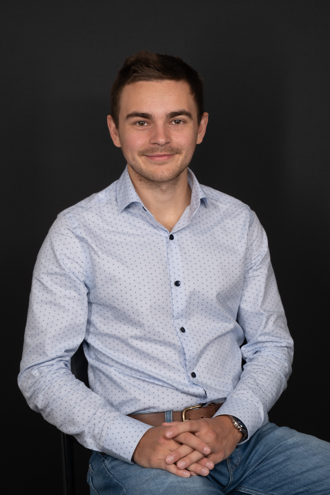

PhD Candidate · Quantum Optics · IQC Waterloo
Fourth-year PhD at the Institute for Quantum Computing. I design the theory, build the experiments, and find out what nature actually does — co-supervised by Kevin Resch and Rob Spekkens (Perimeter Institute).

Writes the theory on Monday, tests it in the lab on Wednesday. Most physicists pick one. I didn't want to.
Python pipelines, LabVIEW scripts, SLURM jobs on Compute Canada — the software exists because I wrote it from scratch.
The stubbornness that gets you to an Ironman finish line at hour 12 is the same thing that keeps the experiment running at midnight.
Explained superposition to a room of 16-year-olds last week. Published theory with Perimeter Institute the week before.
Research
If Born's rule is wrong, every quantum mechanics textbook needs rewriting. I built a 4-slit photonic experiment to measure the Sorkin parameter I₃ and check. So far, quantum mechanics is holding up — but we keep looking.
Quantum FoundationsBuilt a cross-validated ALS rank-sweep pipeline from scratch that characterises quantum state spaces directly from experimental data — no assumption about the underlying theory required. The data tells you the rank.
Data Analysis · State Space TheoryProved a Trichotomy Theorem characterising exactly which Generalised Probabilistic Theories can be understood as theories of limited knowledge. The kind of result you can prove and then design an experiment around.
GPT FrameworkHOM, Mach-Zehnder, Sagnac — aligned them all. SNSPDs, APDs, ICCD cameras, Ti:Sapphire at 790 nm. Precision free-space optics is one of those skills that takes years to build and is immediately obvious when someone has it.
Photonics · OpticsSkills
Personal
Swam 3.8 km, biked 180 km, ran 42.2 km. Turns out training for an Ironman is excellent preparation for experimental physics — both involve a lot of suffering and a stubborn refusal to stop.
Now building toward an 80 km mountain race. Because apparently finishing an Ironman wasn't a strong enough signal that I enjoy suffering. The early mornings and big vertical are honestly good for thinking.
The state spaces I study in the lab are the substrate for photonic quantum computing. I want to be in the room where it gets built commercially — ideally while still understanding exactly why it works.
Contact
If you're building something in quantum technology and want someone who can do the physics, write the code, and run an ultramarathon before the team standup — reach out. Always happy to talk research too.
"It's the questions we can't answer that teach us the most."— Patrick Rothfuss, The Name of the Wind